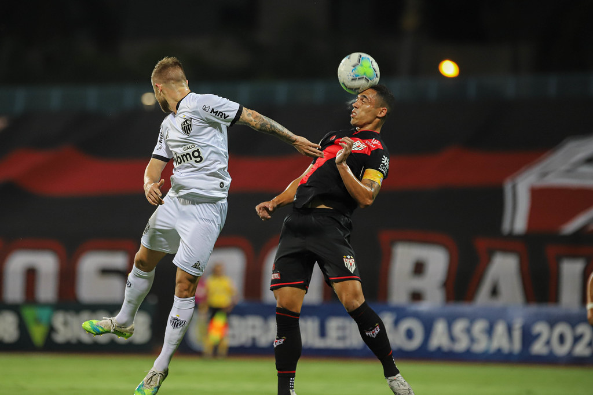
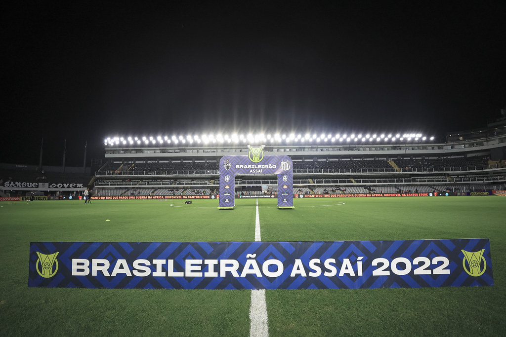
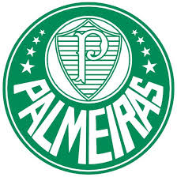
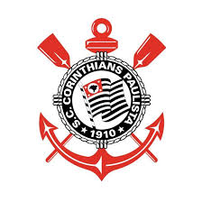
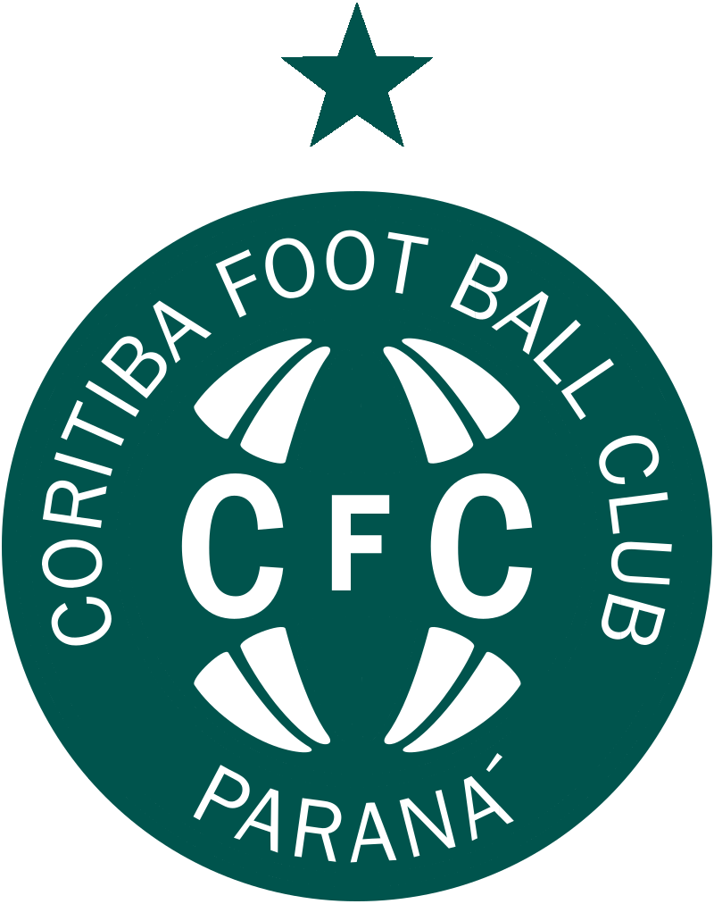

Técnicos Estrangeiros Fazem História: G-4 do Brasileirão 2022 Marcado por Liderança Internacional
O Brasileirão 2022 trouxe uma novidade empolgante: técnicos estrangeiros liderando os principais times do campeonato. Descubra como essa mudança histórica impactou o desempenho dos times do G-4 nesta temporada.
Neste ano, o Brasileirão testemunhou um marco histórico com a presença inédita de técnicos estrangeiros à frente dos principais times da competição. Essa nova dinâmica não apenas trouxe uma perspectiva global ao campeonato, mas também influenciou diretamente o desempenho das equipes, refletindo uma evolução significativa no cenário do futebol brasileiro.
Temporada Emocionante:
O Brasileirão 2022 foi uma temporada repleta de emoção e competição acirrada. Com times de todo o país disputando cada ponto com determinação e paixão, os fãs foram tratados com uma exibição espetacular de futebol de alto nível. Desde o início até o fim, cada rodada trouxe reviravoltas emocionantes e momentos inesquecíveis, destacando a intensidade e imprevisibilidade do campeonato.
Entrada do estádio na Final do Brasileirão 2022
Destaque dos Estrangeiros:
Uma das características marcantes do Brasileirão 2022 foi a presença notável de técnicos estrangeiros liderando equipes brasileiras. Pela primeira vez nos pontos corridos, o G-4 foi composto exclusivamente por times comandados por treinadores de fora do país. Essa diversidade de estilos de gestão e abordagens táticas adicionou uma camada extra de fascínio ao campeonato, mostrando a globalização do futebol brasileiro.
Jovens Talentos Emergentes:
O Brasileirão 2022 foi um terreno fértil para o surgimento de jovens talentos no cenário nacional. Vários jogadores promissores aproveitaram a oportunidade para brilhar nos gramados brasileiros, demonstrando habilidades excepcionais e potencial de classe mundial. Com sua energia contagiante e habilidades técnicas impressionantes, esses jovens jogadores acrescentaram uma nova dimensão ao campeonato, cativando a imaginação dos fãs e deixando uma marca indelével no Brasileirão.
Disputa Pela Coroa:
A corrida pelo título do Brasileirão 2022 foi uma batalha épica até o último apito do árbitro. Com várias equipes competindo pela coroa de campeão nacional, cada jogo era crucial na determinação do destino do troféu. O equilíbrio entre os times na tabela de classificação, juntamente com as performances consistentes e surpreendentes ao longo da temporada, tornou a disputa pelo título uma das mais emocionantes da história recente do futebol brasileiro.
Vejamos a atuação de cada time:
Palmeiras
- Localização: São Paulo, Brasil
- Estádio: Allianz Parque
- Curiosidade: O Palmeiras é um dos clubes mais vitoriosos do futebol brasileiro, com uma história rica em títulos nacionais e internacionais.
O Palmeiras teve uma excelente temporada, terminando em primeiro lugar na tabela de classificação. Com um desempenho consistente ao longo do campeonato, o time demonstrou qualidade técnica e tática em suas partidas, garantindo o título de forma merecida
Atlético Mineiro

- Localização: Belo Horizonte, Brasil
- Estádio: Mineirão
- Curiosidade: O Atlético Mineiro, conhecido como Galo, é um dos clubes mais tradicionais de Minas Gerais e possui uma grande base de torcedores.

O Atlético Mineiro também teve uma ótima campanha no Brasileirão 2022, terminando em segundo lugar. O time mostrou um estilo de jogo ofensivo e envolvente, conquistando vitórias importantes ao longo da temporada e demonstrando força contra seus adversários.
Corinthians
- Localização: São Paulo, Brasil
- Estádio: Neo Química Arena
- Curiosidade: O Corinthians é um dos clubes mais populares e bem-sucedidos do Brasil, com uma torcida apaixonada e uma história de conquistas.
O Corinthians teve uma participação sólida no Brasileirão 2022, conquistando o terceiro lugar na classificação final. Com um elenco competitivo e uma abordagem estratégica bem definida, o time conseguiu resultados positivos e demonstrou sua capacidade de competir em alto nível.
Coritiba
- Localização: Curitiba, Brasil
- Estádio: Estádio Couto Pereira
- Curiosidade: O Coritiba é um dos clubes mais tradicionais do Paraná e possui uma base de torcedores fiéis na região.
O Coritiba fez uma excelente campanha no Brasileirão 2022, terminando na quarta posição. Apesar de enfrentar desafios ao longo da temporada, o time demonstrou resiliência e determinação, conquistando vitórias importantes e garantindo sua posição entre os primeiros colocados.
Vibre com o Brasileirão 2024 AO VIVO
Experimente a emoção de torcer ao vivo no Brasileirão com os melhores jogos exclusivos em 4K e a melhor cobertura.